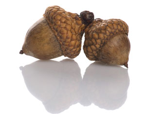

We owe a lasting debt of gratitude to the desperate soul who “discovered” the oyster or stewed that first possum. In the early, hit-or-miss days of foraging, our ancestors learned the hard way about the laxative properties of the senna plant, and to eat only the stems of rhubarb and not the poisonous leaves. Through trial and the occasional fatal error, we sorted the edible from the inedible, the useful from the harmful.
After World War II, when American agriculture was fully conquered by industry and supermarkets full of frozen foods popped up across the land - yes, like weeds - foraging came to be regarded as uncouth, probably unhealthy and certainly out of step with modern times.
Why then, a half-century later, do we find purslane - a vigorous, succulent “weed” once routinely cursed by gardeners - on the menu of nearly every fine dining restaurant in the country? Why, in our big cities, are we seeing groups of people excitedly prying clumps of chickweed from cracks in the sidewalks and prowling like herons through overgrown vacant lots?
Kerri Conan blogs for The New York Times, and keeps a sharp eye on food trends. “When you see ramps (Allium tricoccum; also known as wild leeks) featured in Bon Appetit, and miner’s lettuce on the menu at Chez Panisse, you know wild foods are moving into the mainstream,” Conan says. She thinks the renewed interest in the humble act of foraging is due (ironically) to the increasing sophistication of the American palate.
“Ultimately, people want what tastes best,” she says. “Food that’s fresh, picked at peak flavor and grown without toxins. And wild foods are unusual and interesting. That’s what turns the foodies on nowadays, and that’s why wild foods are becoming popular again.”
Whether an aspect of sophistication or a gut reaction to grim economics, foraging has indeed captured the public’s attention. On television, the Survivorman teaches armchair survivalists how to make a meal of plantain leaves and incautious lizards, while in alleyways across the country, groups of radical urban foragers known as “freegans” protest our wasteful, consumerist culture by dumpster-diving for their dinners. Foraging is the new green - and in these tough times, knowing how to find a salad in a parking lot could be a useful trick.
“Foraging is really no different than grazing,” says Kelly Kindscher, associate scientist with the Kansas Biological Survey. “You need to leave enough leaf material so the plant can produce more. Take too much, and the population dies off.”
Ramps, for example, require several years to recover from a single harvesting. The rising demand from chefs and savvy foodies over the past decade has pushed native stands of ramps into decline. Given our economic zeitgeist, it isn’t hard to imagine hordes of people trampling the countryside, harvesting wild plants like strip miners - decimating species, destroying habitat and frantically hastening our own demise. Could we go so far as to eradicate even the dandelion?
“It depends on if you’re taking the leaf or the root,” Kindscher says. “But you want to eat the weeds. You want to eat the most prolific species. And you also want to ensure that abundance in years to come.”
Kindscher is the author of Edible Wild Plants of the Prairie: An Ethnobotanical Guide and Medicinal Wild Plants of the Prairie: An Ethnobotanical Guide (both published by the University Press of Kansas). Here are Kindscher’s five pointers for successful and responsible foraging.
1. Do your plant homework. Know your Queen Anne’s Lace from your poison hemlock. Positive identification and proper preparation are the forager’s primary concerns - especially when hunting mushrooms. Many poisonous mushrooms look very much like the edible kinds. While mushroom poisoning generally results in mild to serious gastric discomfort, it can also cause organ failure and death. Don’t take any chances! (Learn more about mushrooms in Hunt for Wild Mushrooms, Why We Need Mushrooms and Grow Your Own Mushrooms.)
2. Know where to collect wild foods. Obviously, you don’t want to eat plants collected from a nuclear landfill, or watercress from a polluted stream. Plants along roadsides, or those that may have been exposed to pesticides - on the margins of conventional farms, for example - must be thoroughly washed, preferably several times, before consumption. And get off the beaten path - areas closest to town usually have the most foraging activity. Venture further afield to less-trafficked areas and reap greater rewards.
3. Know when to gather wild foods. Practiced foragers keep a close eye on the calendar and the weather. Spring is the time for greens, when new leaves and shoots are tender and sweet. Mushrooms, ramps, nettles and other spring ephemerals generally have a short harvest window, usually three weeks or so. Wild fruits harvested in autumn, such as persimmons and pawpaws, must be fully ripened (soft to touch), before they are palatable.
4. Leave healthy plants. When harvesting, “Take half, leave half,” is Kindscher’s rule. Learn about and avoid plants that are threatened or endangered.
5. Learn how to prepare wild foods properly. Pokeweed (Phytolacca) can cause intestinal disaster if not cooked in several changes of water, and acorns must be leached several times to remove bitter tannins. Heed your senses - learn to taste the difference between awful and unusual.
“Our population is far too big for foraging to make a significant impact on overall diet,” Kindscher says. For the modern forager, wild plants figure primarily as seasonal highlights in the annual diet - in April, morels with cream, and elderberry pie in August. Apart from the hyper-dose of nutrition that wild plants provide, and the physical benefits of outdoor exercise, foraging also feeds the soul, establishing a connection to place and keeping time with the seasons. “The golden rule,” Kindscher says, “is to tread lightly.”
Here is a list (by no means comprehensive) of commonly known, edible wild plants in North America. Some of these plants are found nearly everywhere in the United States; others are regional.
GREENS & HERBS
Chickweed (Stellaria media)
Chicory (Cichorium)
Curly dock (Rumex crispus)
Dandelion (Taraxacum)
Fiddleheads (various fern species)
Lamb’s quarters, goosefoot (Chenopdium)
Miner’s lettuce (Claytonia perfoliata)
Nettle (Urtica)
Peppercress (Cardamine)
Pigweed (Amaranthus)
Plantain (Plantago)
Pokeweed (Phytolacca)
Purslane (Portulaca)
Seaweeds - dulse, kelp, laver, wrack
Sorrel (Rumex acetosa)
Watercress (Nasturtium)
“Wild” asparagus (Asparagus officinalis ssp. prostratus)
Wild mustard (Brassica)
Wild horsemint, bee balm (Monarda punctata)
ROOTS, BULBS & TUBERS
Arrowhead, wapatoo (Sagittaria variabilis)
American lotus, water chinquapin (Nelumbo lutea)
Jerusalem artichoke, sunchoke (Helianthus tuberosus)
Ramps, ramson, wild leek (Allium tricoccum)
Burdock (Arctium)
Grassnut, California hyacinth (Brodiaea capitata)
Groundnut (Apios tuberosa)
Prairie turnip, Prairie potato (Psoralea esculenta)
Cattail (Typha latifolia)
Camas, quamash (Camassia esculenta)
Chufa, nutsedge (Cyperus esculentus)
Sego lily (Calochortus Nuttallii)
Coontie, Florida arrowroot (Zamia pumila)
FRUIT
Wild strawberry (Fragaria)
Red and black raspberry, wineberry (Rubus)
Blackberry (Rubus)
Blueberry (Vaccinium)
Wild grapes (Vitis)
Mulberry (Morus)
Juneberry, serviceberry (Amelanchier)
Chokeberry (Aronia)
Elderberry (Sambucus)
Wild cherry (Prunus)
Wild plum (Prunus)
Gooseberry (Ribes)
Buffalo currant (Ribes)
Persimmon (Diospyros)
Rose hips (Rosa)
Prickly pear, tuna (Opuntia)
Pawpaw (Asimina)
NUTS & SEEDS
Acorn (Quercus)
Beechnut (Fagus grandifolia)
Black walnut (Juglans nigra)
Butternut (Fuglans cinerea)
Chia (Salvia species)
Hickory (Carya)
Pecan (Carya illinoensis)
Pine nut, pinyon (Pinus species)
Sunflower (Helianthus species)
Wild rice (Zizania)
MUSHROOMS
Morel (Morchella)
Chanterelle (Cantharellus)
Black trumpet, black chanterelle (Craterellus)
Oyster (Pleurotus)
Hen of the woods (Grifola frondosa)
|
 FOTOLIA/JAROSLAW BRZYCHCY There are more than 60 species of oak trees in North America, and every one of them produces edible acorns - just be sure you learn to prepare them properly. |
|
|